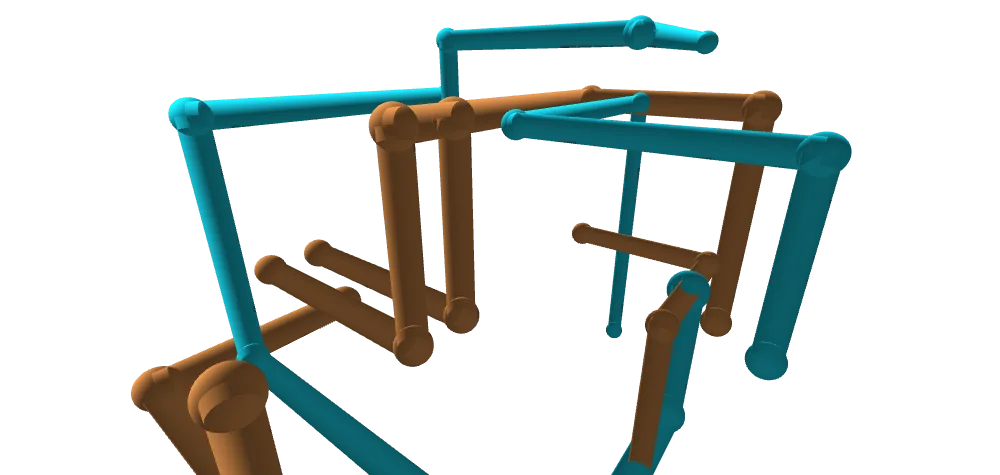

A short list, because this one was a small experiment: how far can a plain static page go on performance, and can it bring back the feeling of watching the XP pipes screensaver.

I wanted entering the lab to feel like an event. The idea was the card breaking away into squares, a nod to the Windows NT logo. Click the card or "Dive in" and it splits into a grid that drifts apart, left to right, before the page changes. It runs under a second, so it never makes you wait, and it's skipped if you've asked your device for less motion.
Rule: a transition is a chance to say something about the thing you're opening.
The first cover was a flat illustration of pipes. It was fine, but it didn't look like the thing it was advertising. I asked for something cooler: a 3D angle on a smaller part of the pipes, so it reads as depth, not a diagram.
So the cover is now rendered by the lab itself. Left to chance, the generator gave me sparse, forgettable pieces, so I placed a cluster of pipes by hand, thicker and closer, and picked the camera angle until it looked right.
Rule: if the real thing looks better than the picture of it, use the real thing.
The screensaver was never about the pipes. It was about sitting there while they grew, turned and eventually filled the screen. So the brief was the behaviour, not a copy of the pixels: copper and cyan, glossy tubes, elbow balls, and a camera that drifts rather than demands attention.
Rule: recreate how it felt to watch, not just how it looked.
A few thousand lit, smooth tubes is a lot for a page with no dependencies. Every pipe segment is a single instance of one shared mesh, so the whole scene is two draw calls however full it gets. If frames run slow, the pixel ratio drops on its own, and the loop stops when the tab is hidden.
There is an FPS readout (the FPS button, or P) so I can check it on real devices instead of guessing. I haven't tested it widely yet.
Rule: measure it, don't assume it.
It shares the capes lab's sparse star field, minus the shooting stars, so the two sit together as one set. Copper and cyan are just the default: a few other palettes are a tap away.
Rule: keep the experiments in one world.
The cards on the index went through a few rounds. The first was three overlapping plates in a stack; I wanted one card per lab. It went text left, card right. The corner radius became real credit-card proportions. And each card tilts to face the middle of the screen, which I asked to be much stronger once the first version was too faint to notice when scrolling.
Rule: if you can't notice an effect, it isn't doing anything yet.